First-person head camera · Fourier GR1 humanoid, dexterous hands
NVIDIA GR1
Short single-task tabletop clips from the robot's forward-looking head camera, kept whole and unmodified. Prompts follow humanoid_action_v1.
- Episodes
- 92
- Gate
- 92 pass
- License
- CC BY 4.0
- Source
- huggingface.co/datasets/nvidia/PhysicalAI-Robotics-GR00T-GR1
- Folder
- NVIDIA_GR1_100/
 1
The robot uses its right hand to grasp the small green bok choy on the right side of the table and lift it clear of the surface. It carries the bok choy to the lower wire basket, lowers it beside the red fruit, and opens its hand to leave it resting inside.
1
The robot uses its right hand to grasp the small green bok choy on the right side of the table and lift it clear of the surface. It carries the bok choy to the lower wire basket, lowers it beside the red fruit, and opens its hand to leave it resting inside.
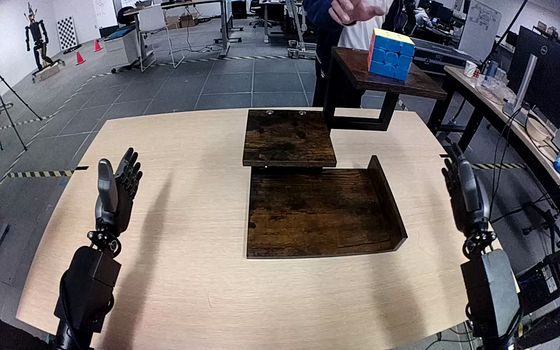
2 After the person turns the Rubik's cube on the top shelf and removes their hand, the robot grasps the cube with its right hand and lifts it clear. It carries the cube down to the bottom shelf, sets it onto the wooden surface, and opens its fingers while keeping the hand beside the cube.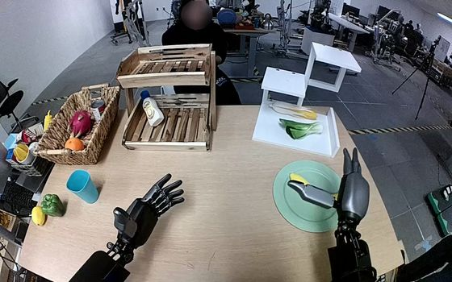
3 The robot closes its right hand around the yellow banana on the teal plate and lifts it clear. It carries the banana leftward to the bare wooden tabletop beside the plate, lowers it, and opens its fingers, leaving the banana beneath the open hand. 4
The robot closes its left hand around the dragonfruit on the pink plate, lifts it, and carries it to the teal plate. It lowers the fruit onto the teal plate and opens its fingers, leaving the fruit lying on its side with the left hand still beside it.
4
The robot closes its left hand around the dragonfruit on the pink plate, lifts it, and carries it to the teal plate. It lowers the fruit onto the teal plate and opens its fingers, leaving the fruit lying on its side with the left hand still beside it.
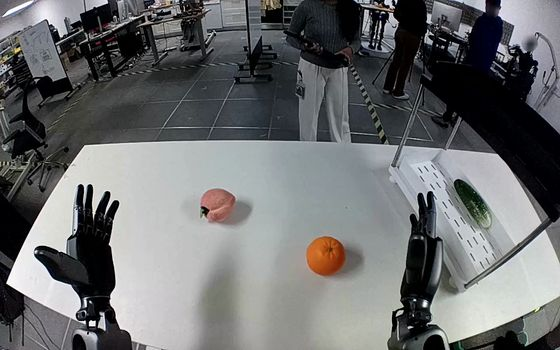
6 The robot closes its right hand around the orange on the tabletop and lifts it, holding it between its thumb and fingers. It carries the orange to the lower white shelf, sets it down beside the green object, and opens its fingers, leaving the orange on the shelf with the hand still beside it.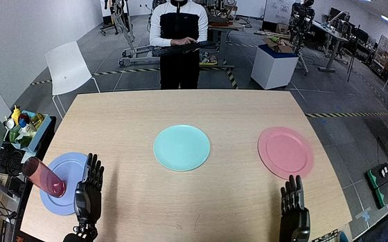
9 The robot uses its left hand to grasp the tall purple glass around its side and lift it from the blue plate. It carries the glass upright to the center of the teal plate, lowers it onto the plate, and opens its fingers, leaving the glass standing upright with its left hand beside it. 10
The robot closes its right hand around the bunch of green grapes in the central black tray and lifts it clear. It carries the bunch to the white circular mat on its right, opens its fingers, and releases the grapes above the mat. The grapes descend beneath its open right hand toward the mat.
10
The robot closes its right hand around the bunch of green grapes in the central black tray and lifts it clear. It carries the bunch to the white circular mat on its right, opens its fingers, and releases the grapes above the mat. The grapes descend beneath its open right hand toward the mat.
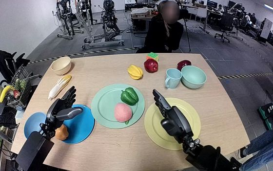
12 The robot uses its left hand to grasp and lift the brown potato from the blue plate. It carries the potato to the yellow plate while its right hand moves outward from above the plate to the plate's right side. The left hand lowers the potato and opens its fingers to release it onto the plate, ending open above the potato.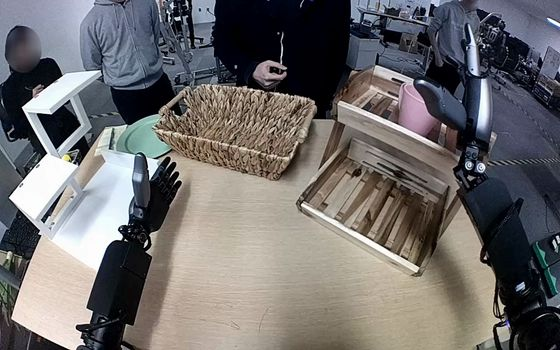
13 The robot closes its right hand around the body of the pink mug on the upper shelf and lifts it clear. It carries the mug onto the tan tabletop in front of the shelf, lowers it upright, and opens its hand to release it, leaving the mug standing on the table. 14
The robot uses its right hand to grasp the red apple on the yellow plate and lift it clear, closing its fingers around the fruit. It carries the apple to the tan bowl and lowers it beside the oval object already inside. The right hand opens to release the apple into the bowl, leaving it there.
14
The robot uses its right hand to grasp the red apple on the yellow plate and lift it clear, closing its fingers around the fruit. It carries the apple to the tan bowl and lowers it beside the oval object already inside. The right hand opens to release the apple into the bowl, leaving it there.
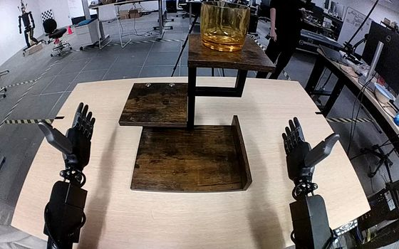
15 The robot uses its right hand to grasp the translucent orange cup around its sides and lift it clear of the top shelf. It carries the cup downward to the bottom shelf, sets it upright, and opens its fingers beside the cup.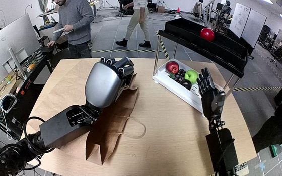
16 The robot keeps the brown paper bag open with its left hand while its right hand grasps the red tomato from the upper black tray and lifts it clear. As the right hand carries the tomato to the opening, the left hand raises the side of the bag it holds. The right hand lowers the tomato below the rim and opens inside the bag while the left hand maintains its hold. 17
The robot uses its left hand to grasp the red-and-white milk carton around its sides and lift it out of the small pink bowl. It carries the carton leftward to the light blue plate, lowers it upright onto the plate, and opens its fingers to release it.
17
The robot uses its left hand to grasp the red-and-white milk carton around its sides and lift it out of the small pink bowl. It carries the carton leftward to the light blue plate, lowers it upright onto the plate, and opens its fingers to release it.
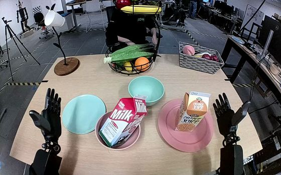
18 The robot grasps the orange juice carton on the pink plate with its right hand, lifts it clear, and carries it upright toward the cyan bowl behind the plate. It lowers the carton into the bowl, leaving it upright with the right hand still beside its upper half.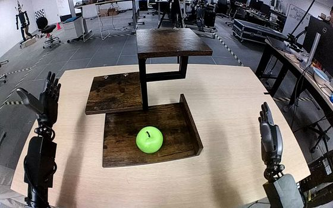
19 The robot closes its right hand around the green apple on the bottom shelf and lifts it clear. It carries the apple upward to the top shelf, lowers it onto the shelf, and opens its hand, leaving the apple upright as the hand lifts away.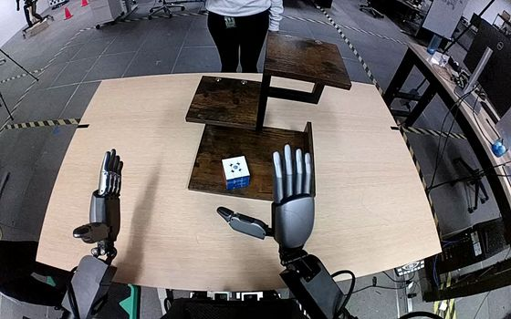
20 The robot grasps the white-and-blue cube on the wooden shelf's bottom tier with its right hand, closing its fingers against the opposing thumb. It lifts the cube clear, carries it up to the top tier, and lowers it to shelf level, beginning to open its fingers while its hand remains around the cube.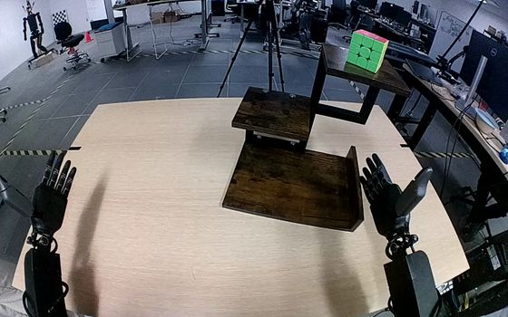
21 The robot uses its right hand to grasp the Rubik's cube on the top level of the wooden shelf, lift it clear, and carry it down to the bottom level. It lowers the cube onto the bottom shelf and opens its fingers, leaving the cube upright with the right hand still beside it.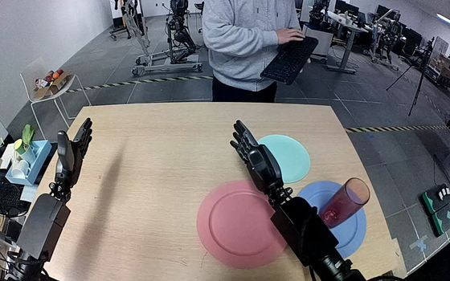
23 The robot grasps the red glass around its side with its right hand, lifts it from the blue plate, and carries it to the teal plate. It lowers the glass onto the teal plate and loosens its fingers, leaving the glass tilted with the right hand still beside its rim.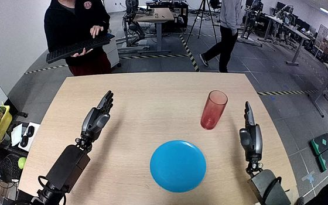
24 The robot uses its right hand to grasp the red translucent tumbler around its sides and lift it from the tabletop. It carries the tumbler toward the blue plate, turns it nearly horizontal, and lowers it onto its side across the plate. The right fingers open while the hand remains over the tumbler.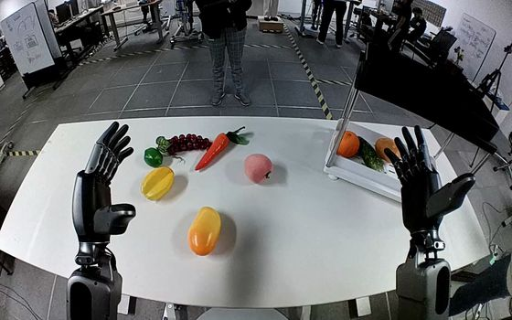
25 The robot uses its right hand to grasp the pink peach near the center of the table, lift it, and carry it to the shelf's lower white tray. It lowers the peach into the tray beside the other fruit and opens its fingers, leaving the peach resting inside.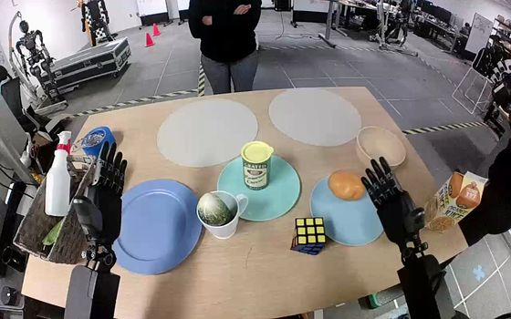
26 The robot uses its left hand to grasp the green zucchini protruding from the white mug and lift it completely out. It carries the zucchini over the empty blue plate, lowers it, and opens its fingers to leave it lying on the plate.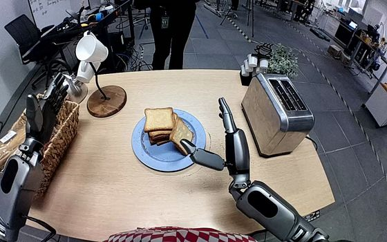
27 The robot uses its right hand to grasp the separate bread slice leaning against the stack on the blue plate and lift it clear. It carries the slice upright to the toaster, lowers it into a slot, and opens its fingers to release it, leaving the bread inside the toaster and the right hand beside the opening.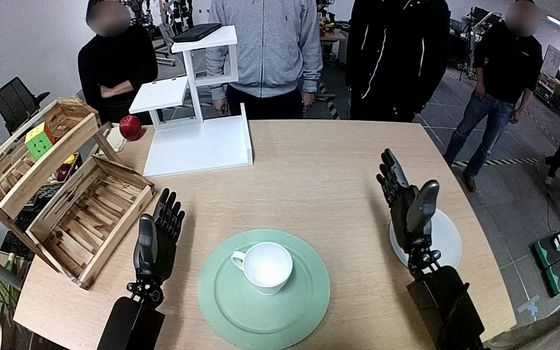
29 The robot uses its right hand to grasp the white mug around its body, lift it from the green plate, and carry it upright to the gray plate on its right. It lowers the mug onto the gray plate, opens its fingers, and lifts its hand clear, leaving the mug upright; meanwhile, the person opposite slides the empty green plate farther away.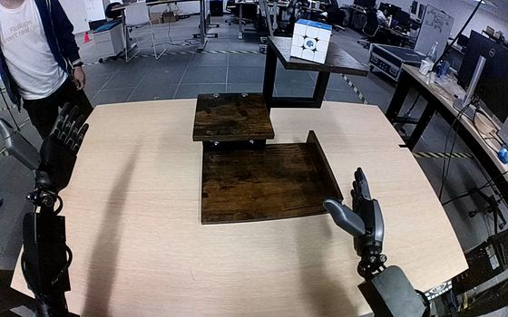
30 The robot grasps the Rubik's cube on the top level of the wooden shelf with its right hand and lifts it clear. It carries the cube downward to the bottom level, lowers it onto the wooden surface, and opens its fingers with the hand remaining beside the cube.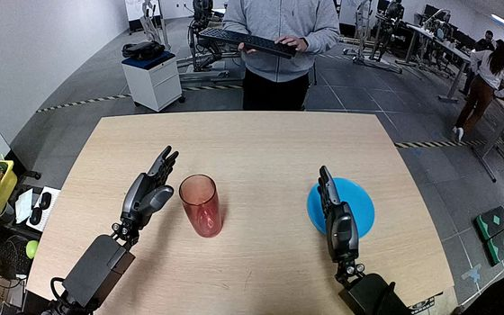
31 The robot grasps the tall red glass around its sides with its right hand and lifts it from the tabletop. It carries the glass to the blue plate while tipping it sideways, lowers it across the plate, and opens its fingers with the glass lying on its side.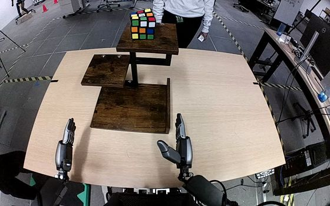
32 The robot uses its right hand to grasp the Rubik's cube on the top shelf and lift it clear. While it carries the cube downward, the person moves the three-tier shelf to the robot's right. The robot lowers the cube onto the bottom shelf and opens its right hand, leaving the cube on that shelf with the hand still beside it.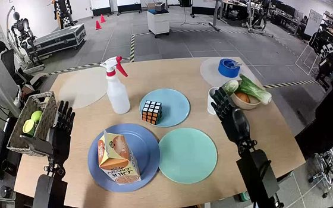
33 The robot uses its right hand to close its fingers around the Rubik's cube on the light blue plate, lift it clear, and carry it toward the teal plate. It lowers the cube onto the teal plate and opens its fingers around it, ending with the hand still close to the cube.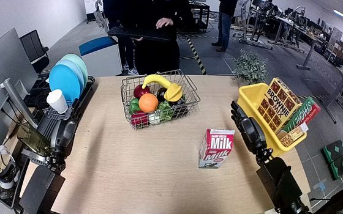
34 The robot uses its right hand to grasp the red-and-white milk carton standing on the tabletop and lift it upright. It carries the carton over the yellow bin, lowers it among the boxes, and opens its fingers, leaving the carton tilted inside the bin beneath its open hand.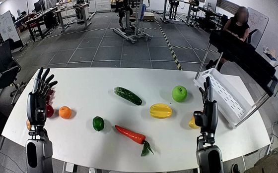
35 The robot uses its right hand to grasp the yellow-orange mango on the right side of the table, lift it, and carry it toward the white shelf. It lowers the mango onto the shelf tray and opens its fingers, leaving the mango on the tray with its hand still beside it.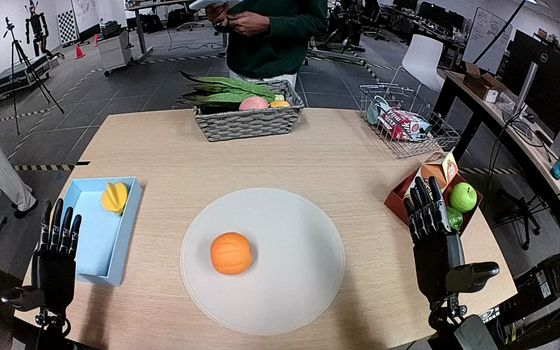
36 Using its left hand, the robot grasps the orange on the circular gray mat and lifts it clear. It carries the orange to the light blue box, lowers it beside the yellow fruit, and opens its fingers to release it inside the box.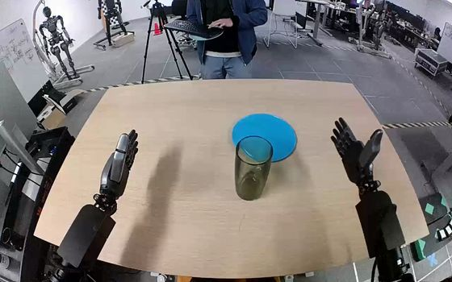
37 The robot uses its right hand to grasp the green cup around its upper sides, lift it from the table, and carry it over the blue plate. It lowers the cup upright onto the plate, opens its fingers to release it, and lifts the right hand clear, leaving the cup standing on the plate.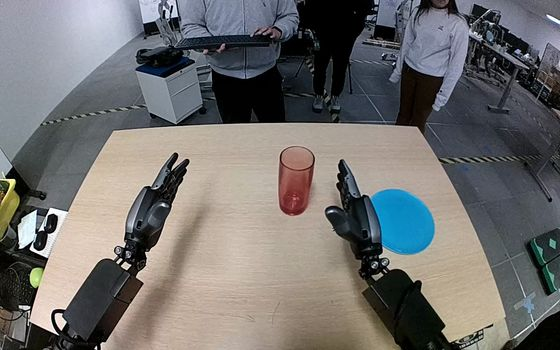
38 The robot closes its right hand around the tall red glass, lifts it from the table, and carries it toward the blue plate. It tilts the glass while lowering it onto the plate, then opens its fingers, leaving the glass lying on its side with the right hand beside it.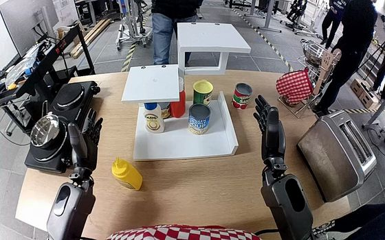
39 The robot grasps the yellow mustard bottle with its left hand and lifts it upright from the tabletop. It carries the bottle to the white shelf's middle level, lowers it onto the shelf, and begins opening its hand while keeping the bottle upright.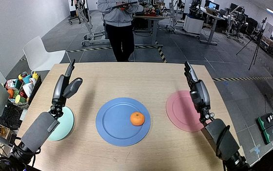
40 The robot reaches inward with its left hand and closes its fingers and thumb around the orange on the blue plate. It lifts the orange, carries it leftward to the pale turquoise plate, then lowers and releases it onto the plate by opening its hand.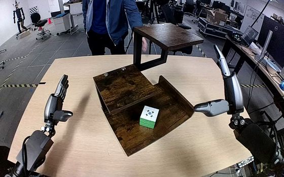
41 A person positions the wooden shelf and turns the Rubik's cube on its bottom level, then withdraws their hand. The robot grasps the cube with its right hand, lifts it clear of the bottom shelf, raises it to the top level, and sets it upright there, opening its fingers above the cube.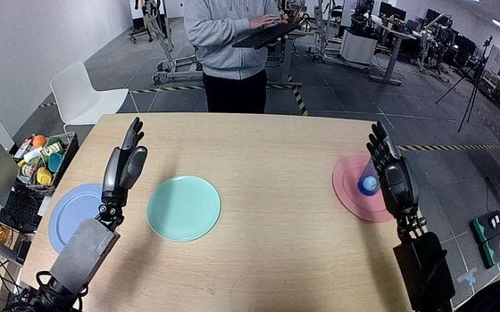
42 The robot closes its right hand around the blue tumbler on the pink plate, lifts it clear, and carries it across to the central pale blue-green plate. It lowers the tumbler upright onto the plate and opens its fingers, ending with the tumbler standing on the plate and its right hand still beside it.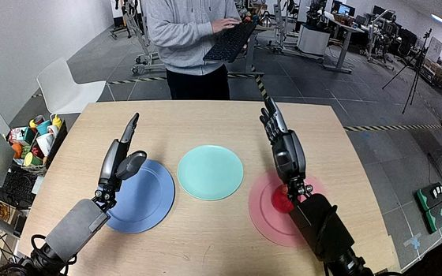
43 The robot closes its right hand around the red apple on the pink plate, lifts it clear, and carries it over to the teal plate. It lowers the apple onto the teal plate and opens its fingers, leaving the apple on the plate with the hand still nearby.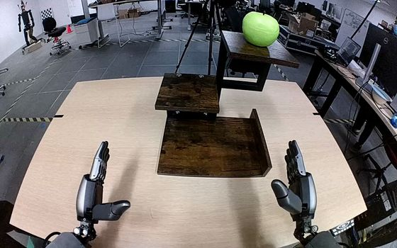
45 The robot grasps the green apple on the wooden shelf's top tier with its right hand and lifts it clear. It carries the apple downward to the bottom tier, sets it on the wooden surface, and opens its hand to leave the apple resting there.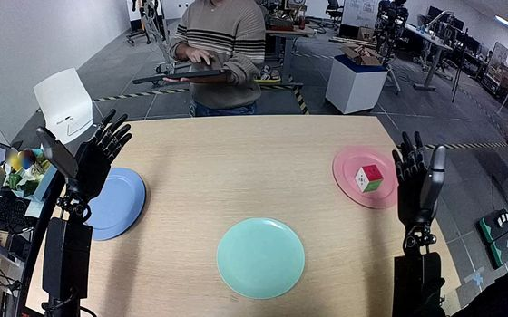
46 The robot closes its right hand around the red, white, and green cube on the pink plate and lifts it free. It carries the cube to the teal plate, lowers it onto the plate, and opens its fingers to leave the cube resting there, with the hand still beside it.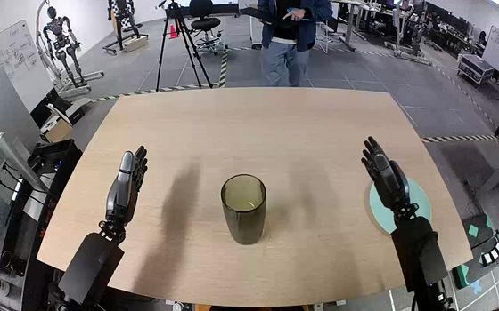
47 The robot grasps the green cup near its rim with its right hand and lifts it from the tabletop. It carries the cup to the teal plate, lowers it onto the plate, and opens its fingers, leaving the cup on the plate with the hand beside it.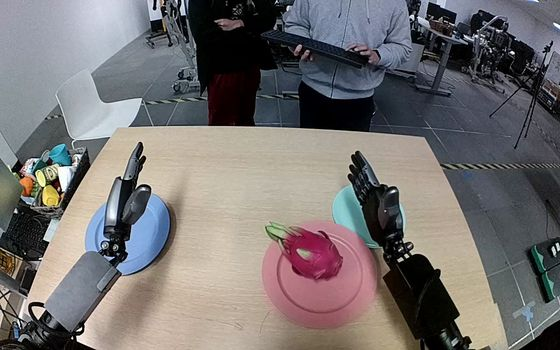
48 The robot uses its right hand to grasp the pink dragon fruit on the pink plate, closing its fingers around the fruit and lifting it clear. It carries the fruit to the teal plate, lowers it onto the plate, and opens its fingers, leaving the fruit resting there with the right hand beside it.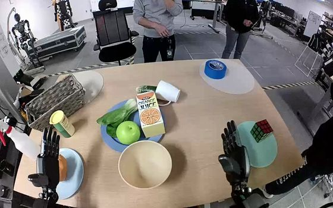
49 The robot uses its left hand to grasp the potato on the blue plate, lift it clear, and carry it to the pale yellow bowl. It lowers the potato into the bowl and opens its fingers, leaving the potato inside.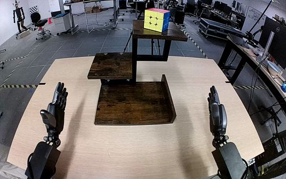
50 The robot reaches up with its right hand, closes its fingers around the Rubik's cube on the top wooden shelf, and lifts it clear. It carries the cube down to the bottom wooden shelf, sets it upright, and opens its hand to leave the cube resting there.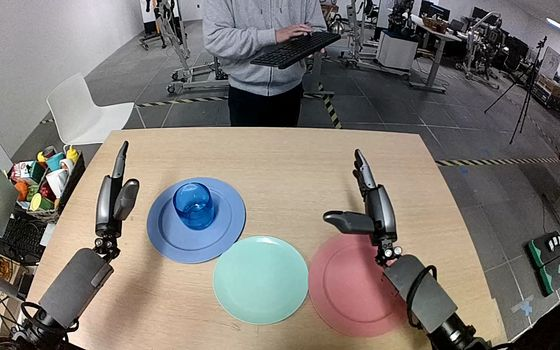
51 The robot's left hand closes around the translucent blue glass on the blue plate, lifts it clear, and carries it to the teal plate. It lowers the glass upright onto the teal plate and opens its fingers beside it, leaving the glass standing there.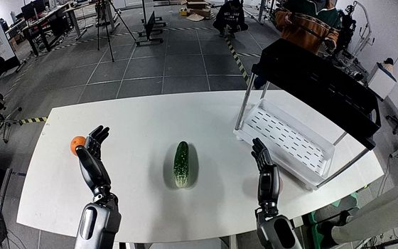
52 The robot closes its right hand around the pink peach on the right side of the table, lifts it, and carries it into the shelf's white bottom tray. It opens its fingers above the tray to release the peach, leaving it resting inside with the right hand still above it.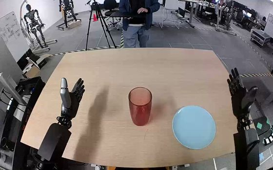
53 The robot uses its right hand to grasp the translucent red cup around its upper sides and lift it from the table. It carries the cup over the light blue plate, lowers it, and opens its fingers to release the cup onto the plate before drawing the hand clear.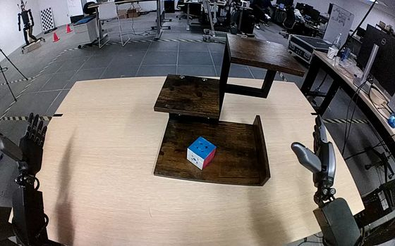
54 The robot closes its right hand around the Rubik's cube on the bottom wooden shelf and lifts it clear. It raises the cube to the top wooden shelf, lowers it toward the surface, and begins opening its fingers while the hand remains around the cube.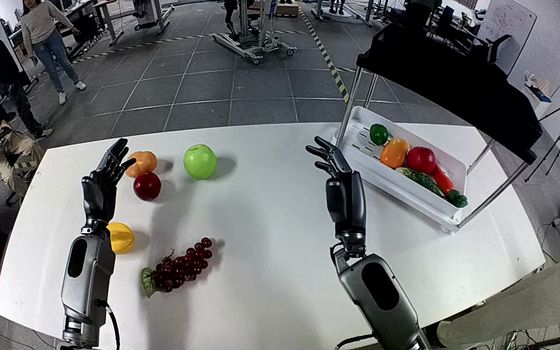
55 The robot closes its right-hand fingers around the bunch of grapes on the table and lifts it off the surface. It carries the bunch to the shelf’s bottom white tray, lowers it among the other produce, and opens its fingers, leaving the grapes in the tray with its hand still above them.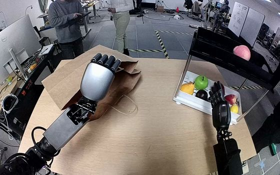
56 The robot's left hand holds one side of the brown paper bag's opening while its right hand grasps the pink peach on the black shelf and lifts it free. As the right hand carries the peach toward the bag, the left hand raises the held side to keep the mouth open. The right hand lowers the peach inside and stays at the opening while the left hand maintains its hold.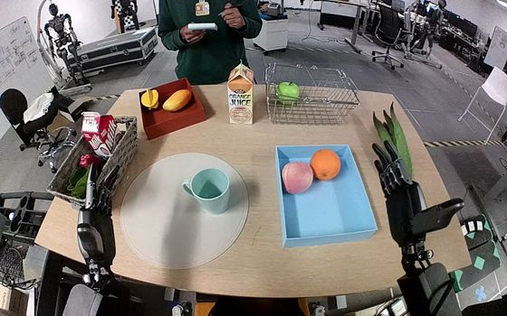
57 The robot uses its right hand to grasp the pale blue mug around its rim and body, lifting it from the circular mat. It carries the mug over the blue tray, lowers it into the open space in front of the fruit, and opens its fingers to release it, then withdraws its hand as the mug remains inside the tray.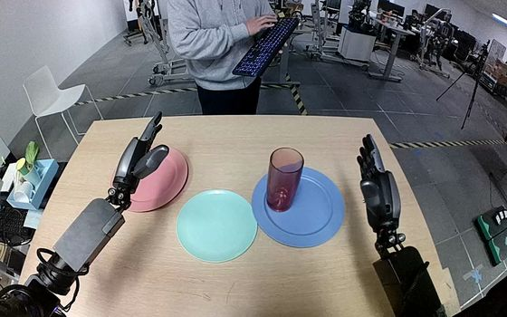
58 The robot closes its right hand around the red translucent tumbler on the blue plate, lifts it upright, and carries it leftward to the teal plate. It lowers the tumbler onto the teal plate, opens its fingers to release it, and draws its right hand away, leaving the tumbler upright.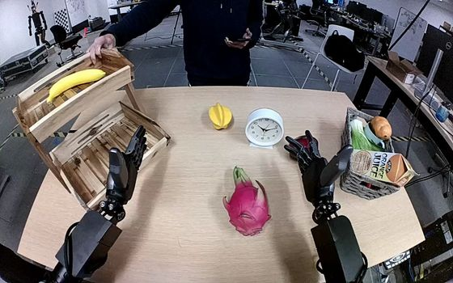
59 After a person slides the white clock closer, the robot grasps its casing with its left hand and lifts it from the table. The left hand carries the clock to the wooden shelf and lowers it upright into the upper tray beside the banana, then begins opening its fingers while remaining over the clock.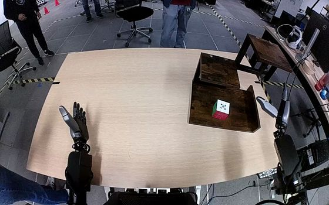
60 The robot uses its right hand to grasp the Rubik's cube between its thumb and fingers on the bottom shelf, lifts it clear, and carries it upward to the top shelf. It lowers the cube onto the top shelf and opens its hand, leaving the cube resting there with the right hand still nearby.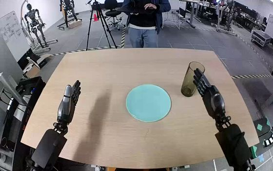
61 The robot uses its right hand to grasp the green glass around its side and lift it from the tabletop. It carries the glass upright over the light blue plate, lowers it onto the plate, and opens its fingers to release it, leaving the glass standing upright.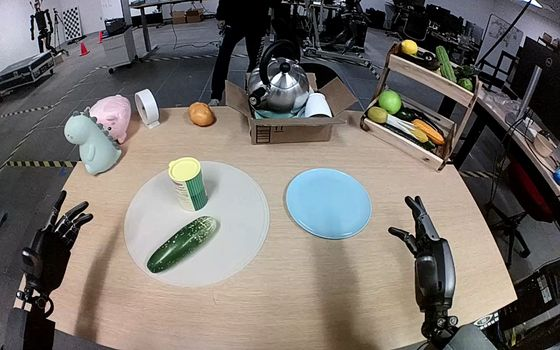
62 The robot grasps the green cucumber on the round placemat with its left hand, lifts it clear, and carries it across to the cyan plate. It lowers the cucumber onto the plate and opens its fingers, leaving the cucumber lying diagonally on the plate with the left hand still beside it. 63 The robot closes its left hand around the yellow mustard bottle standing on the blue plate and lifts it clear. It carries the bottle to the pale turquoise plate, lowers it upright onto the plate, and opens its fingers to release it. 64 The robot grasps the dark red apple at the center of the table with its right hand, lifts it, and carries it toward the lower black wire tray. A person slides the tray toward the robot while it holds the apple; the robot lowers the apple among the other produce and opens its hand inside the tray. 65 The robot closes its right hand around the dark blue clock on the pink plate and lifts it clear. It carries the clock to the light green plate, lowers it upright, and opens its fingers with the hand still alongside the clock. 66 The robot closes its right hand around the Rubik's cube on the bottom level of the wooden shelf and lifts it clear. As the person shifts the shelf to the right, the robot raises the cube to the top level, lowers it onto the surface, and opens its hand, leaving the cube upright on the shelf. 67 The robot closes its right hand around the green apple on the bottom shelf and lifts it clear. It carries the apple upward, lowers it onto the top shelf, and begins opening its right fingers, ending with the apple upright on the shelf and its hand still beside it. 68 The robot closes its right thumb and fingers around the orange juice carton and lifts it off the pink plate. It carries the carton over the pink bowl behind the milk carton, lowers it upright into the bowl, and opens its right hand, leaving the carton standing in the bowl. 69 The robot closes its right fingers and thumb around the tall tinted glass on the right side of the table and lifts it upright. It carries the glass over the turquoise plate, lowers it onto the plate, then opens its fingers and raises the hand away, leaving the glass standing on the plate. 70 The robot uses its right hand to grasp the red cup around its sides, lift it from the right side of the table, and carry it over the blue plate. It turns the cup sideways while lowering it onto the plate, then opens its fingers with the cup lying across the plate and its hand still beside it. 71 The humanoid uses its right hand to grasp the tan potato near the front center of the table between its thumb and fingers, then lifts it. It carries the potato to the lower white shelf tray, lowers it inside, and opens its fingers to release it, with the right hand remaining above the potato. 72 After the person releases the white clock on the lower shelf, the robot grasps the clock's case with its left hand and lifts it clear of the shelf. It carries the clock toward the middle of the table and holds it upright there, still grasped in the left hand. 73 The robot uses its left hand to grasp the blue clock from the bottom wooden shelf, lift it free, and carry it over the teal plate. It lowers the clock near the plate's center and opens its fingers, leaving the clock on the plate with its hand still close to the clock. 74 The robot grasps the Rubik's cube on the bottom level of the wooden shelf with its right hand and lifts it clear. It carries the cube up to the top level, sets it upright on the shelf, and opens its fingers above the standing cube. 75 The robot uses its right hand to grasp the tangerine on the large pink plate and lift it clear. It carries the fruit to the small teal plate, lowers it onto the plate, and opens its fingers to release it, leaving the tangerine resting there. 76 The robot closes its right hand around the Rubik's cube on the upper level of the wooden shelf and lifts it clear. It carries the cube down to the bottom level, sets it upright, and opens its right hand to release it, leaving the cube resting on the lower shelf. 77 The robot uses its left hand to grasp the red translucent tumbler around its sides, lift it from the blue plate, and carry it to the pale turquoise plate just beyond it. It lowers the tumbler upright onto that plate, opens its fingers, and withdraws the hand, leaving the tumbler standing on the plate. 78 Using its left hand, the robot grasps the long green leafy vegetable lying across the left basket and lifts it free. It carries the vegetable to the central circular mat, lowers it flat with the pale stem pointing right, and opens its fingers to release it onto the mat, leaving the hand above the leafy end. 79 The robot uses its right hand to grasp the red pepper on the black upper shelf, lift it clear, and carry it around the shelf’s right edge toward the white bottom shelf. It lowers the pepper onto the bottom shelf and opens its fingers to release it, leaving the hand just above the pepper. 80 The robot uses its right hand to grasp the colored puzzle cube on the bottom shelf and lift it clear. It carries the cube upward to the top shelf and lowers it onto the surface. The cube ends upright on the top shelf, with the right hand still positioned around it. 81 The robot uses its right hand to grasp the ear of corn around its pale husk on the right side of the table and lift it clear. It carries the corn upward over the two-tiered wooden shelf, lowers it into the upper tray, and opens its hand, leaving the corn resting across the wooden slats. 82 The robot uses its right hand to grasp the multicolored cube on the bottom wooden shelf, closing its fingers and thumb around opposite sides and lifting it clear. It carries the cube up to the top shelf, lowers it onto the wood, and opens its hand, leaving the cube standing there with the hand beside it. 83 The robot uses its right hand to close its fingers around the Rubik's cube on the pink plate and lift it clear. It carries the cube forward to the small cyan plate, lowers it onto the plate, and opens its hand, leaving the cube there as the hand lifts slightly away. 84 The robot uses its right hand to grasp the yellow mango on the right side of the table and lift it. It carries the mango into the shelf's lower white tray and opens its fingers, leaving the mango in the tray with its hand still nearby. 85 The robot uses its right hand to grasp the green cucumber on the white circular surface and lift it clear of the tabletop. It carries the cucumber over the lower tier of the black wire basket, opens its fingers, and releases it into the basket, leaving its right hand open above it. 86 The robot uses its right hand to grasp the red apple at the right edge of the table, closing its fingers around it and lifting it clear. It carries the apple into the lower tier of the black wire fruit basket and opens its hand, leaving the apple beside the green fruit. 88 The robot uses its right hand to grasp the bunch of purple grapes on the right side of the table and lift it clear. It carries the bunch to the white lower shelf, lowers it onto the shelf tray, and opens its fingers to leave the grapes resting there. 89 After a person sets the pink peach on the upper rear shelf and lets go, the robot grasps it with its right hand and lifts it clear. It carries the peach forward and down to the bottom shelf, opens its fingers to leave it resting there, and withdraws its right hand. 90 The robot uses its right hand to grasp the Rubik's cube on the circular gray mat between its thumb and curled fingers, then lifts it clear. It carries the cube to the black rack on its right, lowers it among the produce, and opens its hand to release it inside the rack. 91 The robot grasps the orange juice carton at the center of the table with its right hand, lifts it, and carries it over the gray basket. It lowers the carton among the produce and loosens its grasp, leaving the carton tilted inside the basket with the right hand still beside it. 92 The robot grasps the cube on the lowest shelf with its right hand, closes its fingers around the sides, and lifts it clear. It carries the cube up to the highest shelf, sets it upright, and opens its hand to leave it resting there. 93 The robot grasps the white clock at the center of the table with its left hand and lifts it clear. It carries the clock into the wooden shelf's lower compartment, lowers it onto the slatted base, and opens its fingers to leave the clock lying inside. 94 The robot uses its right hand to grasp the purple grape bunch at the center of the table and lift it. It carries the grapes to the white plastic tray on its right, lowers them among the other fruit, and opens its fingers, leaving the bunch in the tray with the hand nearby. 95 The robot uses its left hand to grasp the Rubik's cube between its thumb and fingers on the yellow plate, then lifts it clear. It carries the cube to the gray plate, lowers it, and opens its fingers to leave the cube resting on the plate. 96 The robot grasps the pink peach on the upper black shelf with its right hand and lifts it clear. Its left hand keeps hold of a handle of the brown paper bag and raises that side of the opening while the right hand carries the peach toward it. The right hand lowers the peach inside the bag and begins opening its fingers around it, remaining beside the peach. 97 The robot uses its right hand to grasp the dark green avocado on the right side of the table and lifts it from the tabletop. It carries the avocado to the wire fruit basket's lower tier, lowers it inside, and opens its fingers to leave the avocado in the basket. 98 The robot grasps the yellow mustard bottle around its body with its left hand, lifts it from the table, and carries it upright to the white shelf’s middle level. It lowers the bottle upright onto that shelf and begins opening its fingers, with the left hand remaining beside the bottle. 99 The robot closes its right fingers and thumb around the translucent reddish-orange glass on the pink plate, lifts it clear, and carries it to the pale turquoise plate. It lowers the glass until its base rests on the turquoise plate, then opens its right hand beside the glass. 100 The robot reaches to the top level of the wooden shelf with its right hand, closes its fingers around the Rubik's cube, and lifts it clear. It carries the cube down to the bottom shelf and opens its fingers, leaving the cube on that shelf with its hand still beside it.No episodes match. Clear the search or choose another gate filter.